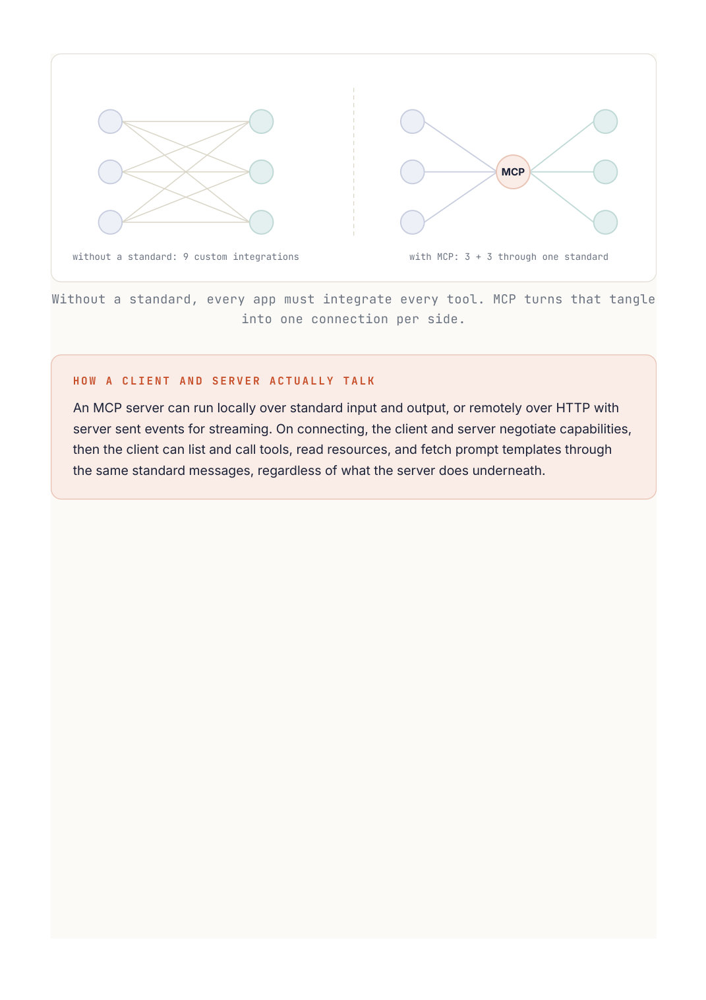

AI Engineering
Chapter 40
MCP
Once agents start using tools, every application ends up reinventing how to connect a model to data and actions. The Model Context Protocol is an open standard that fixes this. It is a common way for an AI app to plug into external tools, data, and prompts, a bit like a universal port for AI, so any compatible app can use any compatible integration.
Files server tools · resources · prompts Host app Database server model + MCP client tools · resources · prompts GitHub server tools · resources · prompts One standard way for an AI app to plug into many external tools, data sources, and prompt templates.
How it fits together
The host is the AI application, the thing that runs the model. It contains an MCP client. A server is a small separate program that exposes some capability, and you run many of them, typically one per integration: one for your files, one for a database, one for GitHub, and so on. The client connects to these servers in a standard way and lets the model use what they offer.
Each server can expose three kinds of things. Tools are actions the model can call, like "create an issue" or "run a query". Resources are data the model can read, like a file or a record. Prompts are reusable prompt templates the server provides. Because the protocol is standard, the client discovers all of this automatically.
# A tiny MCP server exposing one tool.
from mcp.server import Server
server = Server("weather")
@server.tool()
def get_weather(city: str) -> str:
"""Return the current weather for a city."""
data = weather_api.lookup(city)
return f"{data.temp}C and {data.summary}"
# Any MCP compatible host can now discover and call get_weather,
# no custom glue code needed in the app itself.
W R I T E T H E I N T E G R A T I O N O N C E
The big win is decoupling. You build a tool as an MCP server one time, and then every MCP compatible client can use it without custom code. Tools stop being welded into a single app and become reusable building blocks, which is exactly why the standard caught on so fast.
Going Deeper
The M times N problem it solves
Before a standard, connecting M applications to N tools meant building M times N custom integrations, a tangle that grows impossibly fast. MCP collapses this to M plus N: each application implements one MCP client, each tool is wrapped once as an MCP server, and any client can talk to any server. When a client connects, it asks the server what it offers and the server describes its tools, resources, and prompts, so the discovery is automatic and nothing is hard coded. That single decoupling is why an integration written once becomes usable everywhere.

Without a standard, every app must integrate every tool. MCP turns that tangle An MCP server can run locally over standard input and output, or remotely over HTTP with server sent events for streaming. On connecting, the client and server negotiate capabilities, then the client can list and call tools, read resources, and fetch prompt templates through the same standard messages, regardless of what the server does underneath.